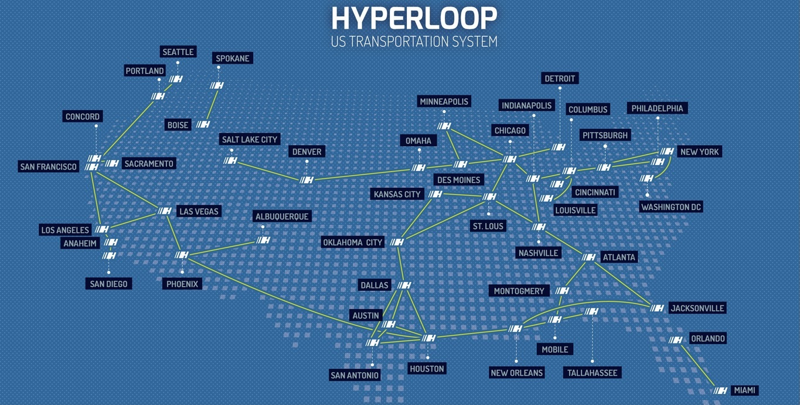

L'Hyperloop
Hyperloop, ce mot ne vous dit sûrement rien. Et pourtant, il sera bientôt sur les lèvres de tout le monde. Alors d’un train TGV permet de se rendre de Brest à Paris en 6h, vous allez pouvoir voyager plus
vite que votre ombre. En effet,
de nouvelles technologies ont permis à notre entreprise de créer un train propulsé sur des coussins d’air.
A
l’aide d’un champ magnétique généré par un moteur à induction, la capsule est propulsée dans un double tube rempli d’air. Cet air sous basse pression va permettre un déplacement très rapide dans le tube.
Ce train nouvelle génération n’a que des avantages. Nous espérons remplacer tous les aéroports par ce genre de train. Cette concurrence sera basée
sur le problème du voisinage. En effet, alors qu’un avion produit 130 décibels à cause de ses réacteurs, l’hyperloop ne produit que 55 décibels presque autant d’une éolienne. Un autre avantage serait de diminuer les gaz à effet de serre. Avec
ses moteurs à induction, plus aucun gaz ne sera émis dans l’air. Un autre bon point pour ce train.